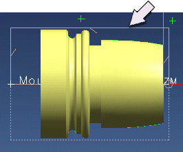

Define the blank geometry
Define the blank boundary as bar stock with a 4.50 length, 3.20 diameter, and a Mounting Point position at X= –4.35. Y=0.00, Z=0.00.

-
In the Operation Navigator, double-click the TURN_WORKPIECE node.
-
In the Turn Workpiece dialog box, in the Geometry group, click Specify Blank Boundaries
 .
.
-
In the Select Blank dialog box, under Mounting Position, click Select.
-
In the Point dialog box, in the Output Coordinates group, in the XC box, type –4.35.
-
Click OK.
-
In the Select Blank dialog box, in the Length box, type 4.50.
-
In the Diameter box, type 3.20.
-
Click OK twice.